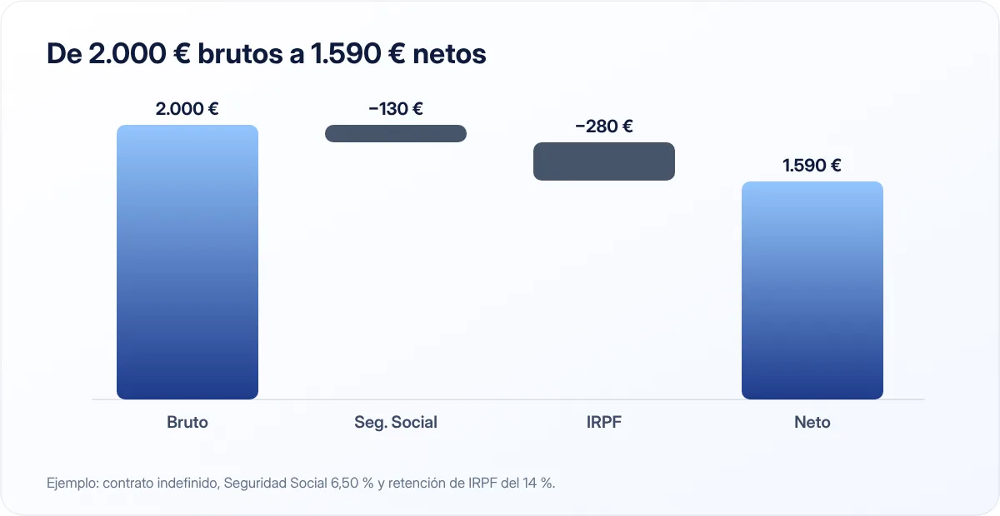

Cómo leer tu nómina: del sueldo bruto al neto, línea a línea
Saber leer tu nómina te permite comprobar que te pagan lo correcto, entender por qué cobras lo que cobras y planificar mejor tu presupuesto.

Puntos clave
- El bruto es lo que generas; el neto (líquido a percibir) es lo que llega a tu cuenta.
- La diferencia son tus cotizaciones a la Seguridad Social (6,50 % en un contrato indefinido en 2026) y la retención de IRPF.
- La retención de IRPF es un adelanto del impuesto que se ajusta en la declaración de la Renta.
Las partes de una nómina
Todas las nóminas en España siguen una estructura similar, aunque el diseño cambie de una empresa a otra:
- Encabezado: datos de la empresa y del trabajador, categoría profesional, antigüedad y periodo de liquidación.
- Devengos: todo lo que ganas en el mes, el total devengado o sueldo bruto.
- Deducciones: lo que se descuenta del bruto.
- Líquido a percibir: lo que llega a tu cuenta, el sueldo neto.
- Bases de cotización: información sobre las cantidades sobre las que se calculan las cotizaciones.
Devengos: lo que ganas
Percepciones salariales
- Salario base: la cantidad mínima fijada por tu convenio colectivo para tu categoría.
- Complementos salariales: antigüedad, nocturnidad, peligrosidad, idiomas, objetivos, plus de convenio…
- Horas extraordinarias, si las hay.
- Pagas extraordinarias: por ley hay al menos dos al año. Pueden cobrarse aparte (14 pagas) o prorrateadas en las 12 mensualidades.
Percepciones no salariales
Son cantidades que no retribuyen tu trabajo sino que compensan gastos: dietas, plus de transporte, desgaste de herramientas, indemnizaciones. Tienen un tratamiento especial en cotización y tributación, dentro de ciertos límites.
Deducciones: lo que se descuenta
Cotizaciones a la Seguridad Social
Son tu aportación al sistema público: pensiones, bajas, desempleo, formación. En 2026, los porcentajes a cargo del trabajador en el régimen general con contrato indefinido son:
| Concepto | Porcentaje |
|---|---|
| Contingencias comunes | 4,70 % |
| Desempleo (contrato indefinido) | 1,55 % |
| Formación profesional | 0,10 % |
| Mecanismo de Equidad Intergeneracional (MEI) | 0,15 % |
| Total | 6,50 % |
En contratos de duración determinada, el porcentaje de desempleo es mayor. La empresa paga además su propia parte, bastante más alta, que no se descuenta de tu sueldo pero sí aparece informada en la nómina.
Retención de IRPF
Es un adelanto del Impuesto sobre la Renta que la empresa ingresa a Hacienda en tu nombre cada mes. El porcentaje depende de tu sueldo anual, tu situación familiar (hijos, ascendientes a cargo, discapacidad), tu tipo de contrato y otras circunstancias que comunicas a la empresa mediante el modelo 145.
Al hacer la declaración de la Renta, se compara lo que te han retenido con lo que realmente debes pagar. Si te retuvieron de más, Hacienda te devuelve la diferencia; si te retuvieron de menos, te toca pagar.
Una retención baja no significa que pagues menos impuestos: solo que pagas menos ahora y quizá más en junio. Si tu situación cambia, actualiza el modelo 145.
Otras deducciones
- Anticipos que hayas recibido.
- Valor de productos en especie (por ejemplo, un seguro médico de empresa).
- Cuota sindical, si estás afiliado y lo has autorizado.
Un ejemplo simplificado

Supongamos un trabajador con contrato indefinido, 14 pagas y un salario bruto mensual de 2.000 € (sin pagas prorrateadas) y una retención de IRPF del 14 %:
| Concepto | Importe |
|---|---|
| Total devengado | 2.000,00 € |
| Seguridad Social (6,50 %) | −130,00 € |
| IRPF (14 %) | −280,00 € |
| Líquido a percibir | 1.590,00 € |
Ejemplo orientativo. La base de cotización en un mes ordinario incluye la parte proporcional de las pagas extra, por lo que la cotización real será algo mayor que el 6,50 % sobre el bruto del mes. El porcentaje de IRPF de cada persona es distinto.
Comprueba tu nómina cada mes
Tres comprobaciones rápidas:
- El salario base y los complementos coinciden con tu contrato y tu convenio.
- Las horas extra que has hecho aparecen y están bien pagadas.
- La retención de IRPF es razonable. Puedes calcularla con la herramienta oficial de la Agencia Tributaria.
Si ves un error, comunícalo a recursos humanos o a la gestoría cuanto antes.
Por qué esto importa para tu presupuesto
Tu presupuesto se construye sobre el neto, no sobre el bruto. Si negocias una subida o comparas ofertas de trabajo, recuerda que el aumento neto será menor que el bruto. Y si cobras 14 pagas, decide de antemano qué harás con las extra: son una gran oportunidad para el fondo de emergencia o los gastos anuales de tu presupuesto mensual.
En resumen
Bruto menos cotizaciones (6,50 % en un indefinido en 2026) menos retención de IRPF igual a neto. Revisa cada mes que los conceptos son correctos y mantén actualizada tu situación personal ante la empresa para evitar sorpresas en la Renta.
Fuentes consultadas
Este artículo es informativo y no constituye asesoramiento financiero, fiscal ni jurídico personalizado. Las cifras son orientativas y pueden cambiar; consulta las fuentes oficiales y, si lo necesitas, a un profesional. Cómo elaboramos nuestras guías.